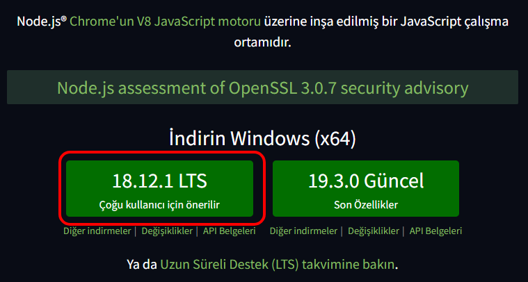
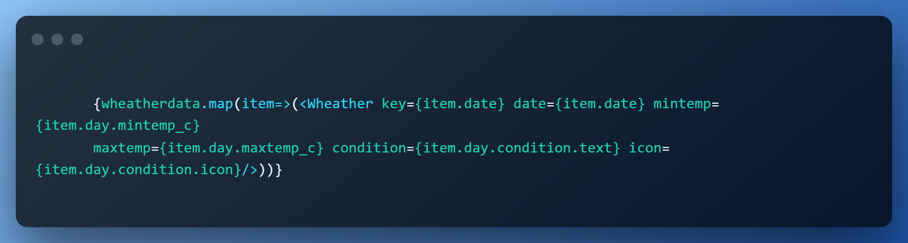
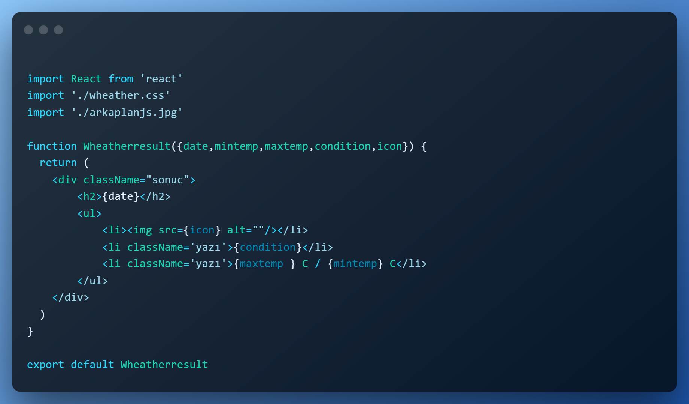

React ile Lokal Hava Durumu Uygulaması
Lokal hava durumu uygulamamda "React" yazılım dilinden yararlanarak, 3 günlük hava durumunu; tarih, havanın nasıl olduğunu gösteren simge, havanın nasıl olduğu ve gündüz/gece sıcaklık değerlerini getirir.
Projemdeki değerler İnglizcedir çünkü verileri yabancı bir kaynaktan çekiyor.
Projem başka bir bilgisayarda çalışmamaktadır. Çünkü React dilinden yapılan projeye host alınması gerekir bu da ücretli olduğundan sadece fotoğraflar ve video ile sınırlı kalacağım.
GitHub sayfamdan lokal hava durumu projeme bakabilirsiniz.
Projemi yaparken ki adımları, React nedir ve nasıl kurulur sorularına aşağıdaki başlıklardan görebilirsiniz.
React Nedir ?
React, kullanıcı arayüzleri oluşturmak için açık, verimli ve esnek bir JavaScript kütüphanesidir.
Component (bileşen) denilen küçük ve izole parçalar sayesinde karmaşık arayüz birimlerini oluşturmanıza olanak tanır.
React Nasıl Kurulur ?
Öncelikle React dilini kullanmamız için Node.js ve npm kurulumunu yapmanız gerekir.
Node.js Kurulumu
Node.js için vermiş olduğum linke tıklayarak en güncel versiyonunu indirmeye başlayabilirsiniz.

1. Karşınıza çıkan iki seçecenekten sol tarafta olana tıklayarak indirme işlemini başlatıyoruz.
'node-v18.12.1-x64' isimli indirdiğimiz exe'yi çift tıklayarak çalıştırıyoruz.

3. "Lisans sözleşmesindeki şartları kabul ediyorum" butununa tik attıktan sonra devam ediyoruz.

5. Özelleştirme ekranında neleri kurup neleri kurmayacağınızı kendiniz seçebiliyorsunuz
ama tavsiyem burda değişiklik yapmadan diğer adıma geçmektir.

7. Bu ekran geldiyse "Node.js" başarılı bir şekilde kurulmuş demektir.

2. Karşımıza çıkan, karşılama ekranından Next'e basarak diğer adıma geçiyoruz

4. Node.js'i bilgisayarımızda nereye kurmak istiyorsak o dizini seçip devam ediyoruz.

6. Yükleme neredeyse tamamlanacaktır.
NPM ve React App Kurulumu
Visual Studio Code'da React projesi oluşturmamız için terminal ekranını açıyoruz.
Ctrl+Shift+" kısayol tuşlarına basarakta açabilirsiniz.
Açılan terminal ekranına sırasıyla şu ifadeleri girerek npm ve projenizi kurabilirsiniz.
1. npx create-react-app "projeadı-app"
- Bu kısımda npm dosyalarını bilgisayarınıza indirilecektir bu yüzden biraz beklemeniz gerekecektir.
2. cd "projeadı"
3. npm start
Bu adımları izleyerek npm ve projenizi kurabilirisiniz.
Projemin İçeriği ve Yaparken İzlediğim Adımlar
Hava durumu projemin adı DmrWeather'dir. Böyle yapmamın en büyük nedeni hava durumu şirketi gibi davranmak istememdendir.
Bu şirket için ayrı bir web sayfası da tasarladım. İsterseniz DmrWeather şirketi için kurduğum siteye göz gezdirebilirsiniz.
Proje Başlarken
Projeme başlarken yukarıda belirttiğim npm ve React kurulumunda vermiş olduğum
3 adımlık kodları yeni terminal açarak projemi oluşturdum.
App.js adında proje oluşturduktan sonra verileri girmek için arama sekmesini ve buton ekledim.
Bunları Function App() {...} köşeli parantezlerin içine yazarak ekrana yazdırdım.
Arama Kısmı
App.js projeme "arama" adında bir div oluşturarak içine verilerin girileceği bir arama yani input oluşturdum.
Imputumu oluşturduktan sonra onChange ile her veri girişinde değer atamak için cityText adında bir fonksiyon oluşturdum.
Genel olarak oluşturduğum App fonksiyonun için cityText adında yen bir fonksiyon oluşturarak değerleri alabildim.
Fonksiyonun için event oluşturarak her tuşa bastığımızda değeri inputtan alarak city değerinin içine koyuyor. Girilen değerleri kaybetmemek için
wheather ve setwheatherdata parametrelerini useState kullanarak oluşturdum. Arama kısmına girilen her değeri alabilmek için
cityinput = e.target.value; kodunu yazdım. Girilen şehrin veya ülkenin hava durumunu alabilmek adına https://www.weatherapi.com/my/
sitesinden aldığım kendi Api Key'imi sabit değer olan const APP_KEY ='kendi api keyiniz' girerek veri aldım. Bu uygulama da
3 günlük hava durumu alındığından kaynaklı verileri almak için fetch kullanarak sağlamış oluyorum. Tarih, hava durumunu, hava durumu simgesini, min ve max sıcaklıklarını
alabilmek için setwheatherdata parametresini kullandım. Alacağım değerler, props etmek için setwheatherdata(result.forecast.forecastday) kodunu kullandım.
useState ve wheatherdata'ın map'ini alarak sonuç kısmına bağlamak için aşağıdaki kod bloğunu kullanmamız gerekiyor.

Arama kısmı için yaptığım adımları dilim döndüğünce anlatmaya çalıştım. Tüm kod satırı aşağıdaki gibidir.
import React, {useState} from "react"
import Wheather from './Wheatherresult.js';
import './App.css';
import { getDefaultNormalizer } from '@testing-library/react'
function App() {
const APP_KEY = "8c57bb143297421981a10526221412"
let cityinput=""
const [wheatherdata, setwheatherdata]=useState([])
function citytext()
{
document.querySelector("input").addEventListener("input", (e) => {
e.preventDefault();
cityinput = e.target.value;
console.log(cityinput)
})
}
async function getdata(value)
{
const data=await fetch(`http://api.weatherapi.com/v1/forecast.json?key=${APP_KEY}&q=${value}&days=3`)
const result = await data.json();
//console.log(result)//
setwheatherdata(result.forecast.forecastday)
console.log(result.forecast.forecastday)
}
return (
< div>
< div className="arama">
< input type="text" placeholder="Şehrinizi Girin" onChange={citytext}/>
< button onClick={ () => getdata(cityinput)}>Arayın
< /div>
< center>< h1>TarihHava DurumuGündüz / Gece< /h1>< /center>
< hr/>
{wheatherdata.map(item=>(< Wheather key={item.date} date={item.date} mintemp={item.day.mintemp_c}
maxtemp={item.day.maxtemp_c} condition={item.day.condition.text} icon={item.day.condition.icon}/>))}
< /div>
);
}
export default App;
Sonuç Kısmı
Şehir veya Ülke adını girdikten sonra 3 günlük hava durumunu göstermesi için ayrı bir app kurdum.
Bunun adına da Wheatherresult.js adını verdim. Arama kısmındandan gelecek olan tarih, min sıcaklık, max sıcaklık, hava durumu ve simge çekmek için ve
kullanabilmek adına Wheatherresult adında bir fonksiyon oluşturdum. Bu gelecek olan değerler yabancı kaynaktan geldiği için ingilizce bir şekilde fonksiyonun içine yerleştirdim.
Arama fonksiyonunun bu Wheatherresult fonksiyonuna ulaşabilmesi için de Arama kısmına import Wheatherresult from 'Wheatherresult.js kodunu yazdım.

import React from 'react'
import './wheather.css'
import './arkaplanjs.jpg'
function Wheatherresult({date,mintemp,maxtemp,condition,icon}) {
return (
< div className="sonuc">
< h2>{date}< /h2>
< ul>
< li>< img src={icon} alt=""/>< /li>
< li className='yazı'>{condition}< /li>
< li className='yazı'>{maxtemp } C / {mintemp} C< /li>
< /ul>
< /div>
)
}
export default Wheatherresult
Projemizin Videosu
Gördüğünüz gibi projemiz çalışıyor.
Arama kısmına şehir veya Ülke yazabilirsiniz.
DmrWeather Şirket Videosu
Bu sitede tıkladığımda hata aldığım yer hava durumu uygulamam yani App.js adındaki projem ancak domein alınmadığı takdirde
react html ile entegre olamıyor ve programı açmıyor. Böyle bir şeyi yapamadım yapsaydım tıkladığım gibi direkt hava durumu uygulamam açılacaktı
ama iş sadece görselde kaldı. Projemin çalıştığına ait video tanıtımda mevcut.
Şirket Sitesi